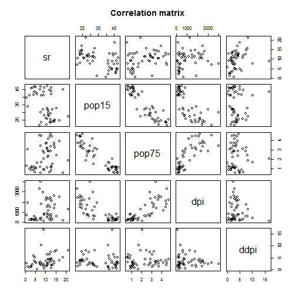

Data on the savings ratio 1960-1970. A data frame with 50 observations on 5 variables.
source "Sterling, Arnie (1977) Unpublished BS Thesis. Massachusetts Institute of Technology."" "Belsley, D. A., Kuh. E. and Welsch, R. E. (1980) Regression Diagnostics. New York: Wiley.""
library(datasets)
data(LifeCycleSavings)
head(LifeCycleSavings)
## sr pop15 pop75 dpi ddpi
## Australia 11.43 29.35 2.87 2329.68 2.87
## Austria 12.07 23.32 4.41 1507.99 3.93
## Belgium 13.17 23.80 4.43 2108.47 3.82
## Bolivia 5.75 41.89 1.67 189.13 0.22
## Brazil 12.88 42.19 0.83 728.47 4.56
## Canada 8.79 31.72 2.85 2982.88 2.43
We can not conclude anything from the plot
pairs(~.,data=LifeCycleSavings,
main="Correlation matrix")

fit<- lm(sr~., data=LifeCycleSavings)
summary(fit)$coefficients
## Estimate Std. Error t value Pr(>|t|)
## (Intercept) 28.5660865407 7.3545161062 3.8841558 0.0003338249
## pop15 -0.4611931471 0.1446422248 -3.1885098 0.0026030189
## pop75 -1.6914976767 1.0835989307 -1.5609998 0.1255297940
## dpi -0.0003369019 0.0009311072 -0.3618293 0.7191731554
## ddpi 0.4096949279 0.1961971276 2.0881801 0.0424711387
-pop15 and ddpi
-explanation Pr(>|t|)<<0.5%